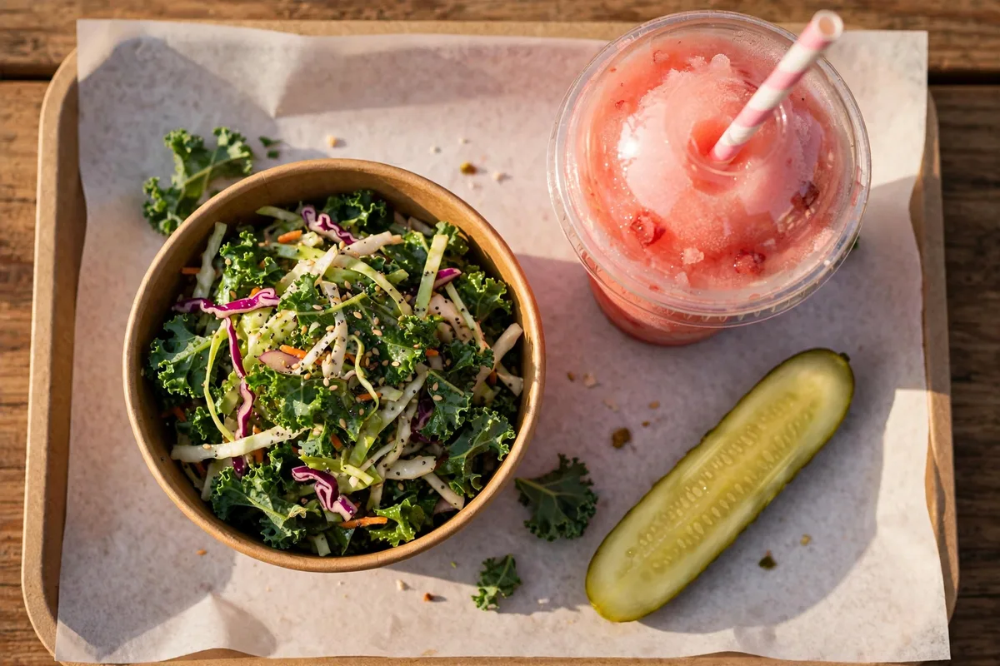

Is Dave's Hot Chicken Gluten Free?
No. Dave's Hot Chicken gluten free does not exist as a menu, a section or a single certified dish: in the words of Dave's own allergens guide, none of its dishes are gluten free. Every chicken and cauliflower item is coated in wheat breading and fried in shared oil, and Dave's offers no gluten free breading, bun or fryer. What this page can honestly do is show you exactly where the gluten sits, correct the three wrong claims that circulate about this menu, and set out the small list of lowest-risk items for readers who avoid Dave's Hot Chicken gluten free by preference rather than by medical need.

Dave's own words: no dish is gluten freeNo GF menu, bun or fryerWhy Nothing at Dave's Is Gluten Free
Three facts combine to close this question, and none of them is a technicality. Together they are why Dave's Hot Chicken gluten free searches end in a no, however the question is phrased.
The breading is wheat, and it is on everything. Tenders, Bites, sliders and the whole cauliflower line are coated in a wheat-flour breading before they are fried. There is no unbreaded chicken on the menu and no gluten free breading option, so the main event of the menu is gluten by construction, not by accident.
The kitchen is shared, end to end. Dave's official allergens guide states that all equipment and fryers are shared, that items cannot be prepared separately, and that modifications to remove an allergen are not offered. That rules out the usual workarounds: no separate fryer, no fresh-oil request, no "hold the breading" build.
There is no gluten free version of anything. No GF bun, no GF bread, no GF menu section, no certified dish. Any page that presents a Dave's Hot Chicken gluten free menu without those warnings is describing a menu Dave's does not run.
Dave's Hot Chicken Gluten Free Options: The Lowest-Risk Items
"Options" needs honest handling. Nothing below is gluten free in the certified sense; these are the items with no gluten ingredient on the allergen chart, graded by the cross-contact risk that comes with them. The full chart is on the allergen menu page.
| Item | Gluten ingredient? | Cross-contact risk | Verdict |
|---|---|---|---|
| Frozen slushers (Hi-C, Minute Maid, Powerade) | No | Low; drinks station | The clearest choice on the menu |
| Sodas & bottled water | No | Low | Clear on the chart |
| Kale slaw | None listed on the chart | Shared prep; dressing not fully published | Lowest-risk food item; confirm the dressing in store |
| Pickles | No | Shared prep and tongs | Preference-level only |
| Honey sauce | No main allergens listed | Shared prep | Preference-level only |
| Fries | No | High: shared fryers with breaded items | Avoid for celiac; risky even by preference |
| Dave's Sauce | Unresolved: published charts conflict | Shared prep | Do not assume; ask in store |
Read the verdict column the way it is written. "Clear on the chart" means the ingredient list is clean, in a kitchen that is not. For anyone whose gluten avoidance is medical, the celiac section below is the part of this Dave's Hot Chicken gluten free guide that applies, and it overrules this table.
Not Gluten Free: The Traps
Three claims about this menu circulate online, on fan pages and in Reddit threads, and all three are wrong about Dave's Hot Chicken gluten free status. Each one is the kind of error that sends a celiac reader into a flare, so each gets a direct correction.
Trap 1: "The cauliflower is the gluten free option"
It is the most repeated mistake about this menu. Dave's NOT Chicken cauliflower line is breaded in the same wheat-flour coating as the chicken; the allergen chart lists gluten against the cauli tenders, bites and sliders outright. Cauliflower answers a meat question, not a gluten one.
Trap 2: "The fries are safe, they use a dedicated fryer"
There is no dedicated fryer. Dave's fries contain no gluten ingredient, and then they are cooked in oil shared with every breaded item on the menu, which is why the chart itself flags them as a gluten cross-contact risk. A page claiming a dedicated gluten free fryer at Dave's is inventing equipment the chain does not have.
Trap 3: "Order the tenders plain, they are naturally gluten free"
The breading is not a coating you can decline; it is how the product is made, and Dave's does not modify dishes to remove allergens. A "plain" tender is still a breaded tender. The same build carries a second trap for dairy readers: a Dave's guide describes the marinade as buttermilk-based, so plain does not mean dairy free either.
Cross-Contact in Dave's Kitchen
Even where an ingredient list is clean, the Dave's Hot Chicken gluten free problem continues in the kitchen itself, because gluten moves: through shared fryer oil, through flour in the air at the breading station, and across shared tongs, trays and prep surfaces.
This is why the official guide's position is absolute rather than item-by-item: with shared equipment and no separate preparation possible, Dave's will not call any dish allergen free, and the fries are the standing example. An ingredient can be absent while the allergen is still present in the food by the time it reaches the tray. Any honest Dave's Hot Chicken gluten free assessment has to price that in, which is why this page grades items by risk instead of stamping anything safe.
Can You Eat at Dave's With Celiac Disease?
On the evidence of Dave's own guide: no, not safely. Dave's Hot Chicken celiac safety fails at every level a celiac reader checks: the food is breaded, the fryers are shared, separate preparation is impossible, and no dish can be guaranteed allergen free.
Dave's states the conclusion itself: if you require food to be free of an allergen, it advises you not to order. For celiac disease, where trace gluten does real harm and symptoms are not a reliable gauge of exposure, that advice should be taken at face value. The drinks case is the only part of the menu with clean ingredients and a low-contact station, and a slusher is not a meal. This page exists to give the gluten free answer straight, and for Dave's Hot Chicken gluten free with celiac disease, straight means choosing a different restaurant.
If You Avoid Gluten by Preference
Preference-level avoidance is a different risk calculation, and the Dave's Hot Chicken gluten free options table above is written for it. If that is you, this is the careful way to run a Dave's visit.
A frozen slusher and the kale slaw are the lowest-risk pairing on the menu. Confirm the slaw dressing in store; the chart lists no gluten in it, and the dressing recipe is not fully published.
The ingredient list is clean and the fryer is not. If your sensitivity is mild and occasional, that is your call to make with the facts in front of you; it should never be made by accident.
Published versions of the allergen chart disagree on Dave's Sauce and gluten. Until the store's own chart settles it for you, the honey sauce is the cleaner documented choice.
The allergen menu is held in store and is the current version. Websites, this one included, are a map; the store's chart is the territory.
Dairy Free, Vegan and Vegetarian at Dave's
Dave's Hot Chicken gluten free questions tend to arrive alongside two cousins, so they get short, straight answers here and full treatment on the allergen page.
Dairy free: there is no dairy free menu either. The items with no milk on the chart are the tenders and bites (with the buttermilk-marinade question flagged on the allergen page), fries, honey sauce, slushers and sodas; mac and cheese, shakes, ranch and every slider build are dairy items. Vegetarian: the cauliflower line is the vegetarian direction of the menu, breaded and fried exactly like the chicken. Vegan: Dave's certifies nothing as vegan; egg appears in the breading system and slaw dressing, milk across the builds, and everything shares the fryers, so the honest Dave's Hot Chicken vegan answer mirrors the gluten one: no certified options, drinks aside.
Source note: the kitchen position, the no-modification rule and the "none of our dishes are gluten free" line are from Dave's official Allergens Guide; item rows are the allergen chart as republished and cross-checked, with the sauce conflict flagged rather than resolved; every other allergy question is covered by the allergen chart linked from this page. The halal guide covers the menu's other dietary question.
Frequently Asked Questions
Does Dave's Hot Chicken have a gluten free menu?
No. There is no gluten free menu, section or certified dish at Dave's. The chain's allergens guide states that none of its dishes are gluten free, every chicken and cauliflower item is wheat-breaded, and all frying happens in shared oil.
Are Dave's Hot Chicken fries gluten free?
No. The fries have no gluten ingredient, but they are cooked in fryers shared with breaded chicken and cauliflower, and the allergen chart flags them as a gluten cross-contact risk. Claims of a dedicated gluten free fryer at Dave's are false.
Is the cauliflower at Dave's gluten free?
No. The NOT Chicken cauliflower items are coated in the same wheat-flour breading as the chicken, and the allergen chart lists gluten against them. Cauliflower is the vegetarian line, not a gluten free one.
Is Dave's kale slaw gluten free?
The allergen chart lists no gluten in the kale slaw (its listed allergens are egg and soy), making it the lowest-risk food item on the menu. It is still prepared in a shared kitchen and the dressing is not fully published, so it is lowest-risk, not a certified Dave's Hot Chicken gluten free item.
Can people with celiac disease eat at Dave's Hot Chicken?
Dave's own guidance says no, in effect: if you require food free of an allergen, the chain advises not ordering, because shared fryers and equipment mean no dish can be guaranteed allergen free. For celiac disease, that advice should settle it.
Does Dave's offer gluten free buns or bread?
No. There is no gluten free bun, bread or breading anywhere on the menu, and dishes cannot be modified to remove allergens, so a slider cannot be rebuilt into a gluten free item.
Is there a gluten free Dave's Hot Chicken near me?
The answer is the same at every location: no store runs a gluten free menu, a separate fryer or a separate prep area. Location does not change the kitchen model, so a Dave's near you carries the same breading, the same shared fryers and the same official position as every other store.
More Dave's Guides
Browse the rest of the Dave's guides.